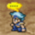
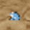

Vos personnages seront peut-être atteints des altérations d’état détaillées ci-dessous après avoir essuyé certaines attaques ennemies. Il est dans votre intérêt de les guérir rapidement à l’aide d’objets ou de sorts. Certaines altérations disparaissent à la fin du combat, mais pas toutes.
Altérations d’état qui disparaissent à la fin du combat
|
Sommeil |
Le personnage s’endort et est incapable d’agir. |
Pour en guérir : Guérison (magie blanche), Réveil (objet) |
 |
Paralysie |
Le personnage est paralysé et incapable d’agir. |
Pour en guérir : Guérison (magie blanche), Corne de licorne (objet) |
 |
Confusion |
Le personnage attaque au hasard ses alliés comme ses ennemis ; vous ne pouvez plus choisir de commande.
|
Pour en guérir : Guérison (magie blanche), attaque ennemie |
 |
Fléau |
L’attaque et la défense du personnage sont divisées par deux. |
Pour en guérir : Guérison (magie blanche), Eau bénite (objet) |
Altérations d’état qui ne disparaissent pas à la fin du combat
 |
 |
Poison |
Le personnage perd progressivement des PV. |
Pour en guérir : Guérison (magie blanche), Antidote (objet) |
 |
|
Obscurité |
Le personnage est moins précis dans ses attaques physiques. |
Pour en guérir : Guérison (magie blanche), Collyre (objet) |
|  |
 |
Silence |
Le personnage est dans l’incapacité de lancer des sorts. |
Pour en guérir : Guérison (magie blanche), Herbe d’écho (objet) |
 |
 |
Porcelet |
Le personnage affecté peut uniquement lancer le sort Porcelet. |
Pour en guérir : Porcelet (magie noire) ou Guérison (magie blanche), Aliments sains (objet) |
|  |
 |
Crapaud |
L’attaque et la défense du personnage sont divisées par deux et il peut uniquement lancer le sort Crapaud. |
Pour en guérir : Crapaud (magie noire) ou Guérison (magie blanche), Baiser de fée (objet) |
 |
 |
Mini |
L’attaque et la défense du personnage sont réduites. |
Pour en guérir : Mini ou Guérison (magie blanche), Maillet (objet) |
 |
 |
Pierre |
Le personnage est changé en pierre et incapable d’agir. |
Pour en guérir : Guérison (magie blanche), Épingle d’or (objet) |
 |
Coma |
Le personnage a perdu tous ses PV. |
Pour en guérir : Vie (magie blanche), Queue de phénix (objet) |